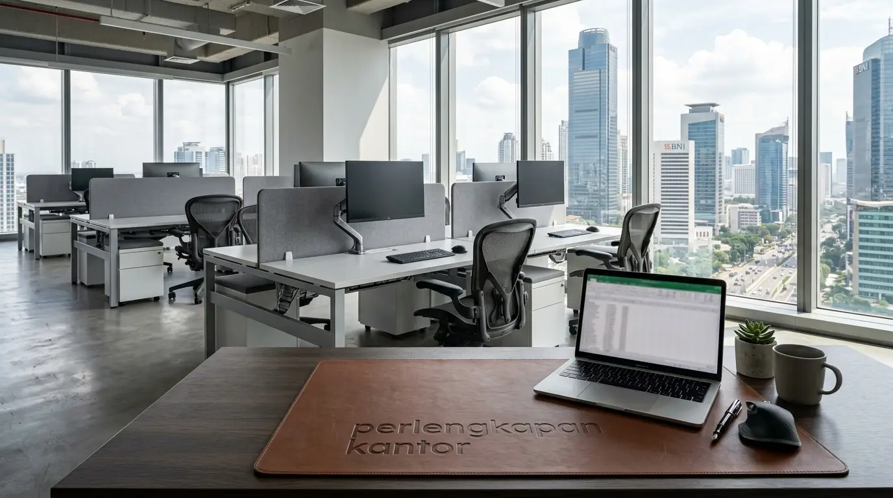

Apa Itu Desain Tata Ruang Kantor Minimalis dan Mengapa Penting bagi Perusahaan?
Desain tata ruang kantor minimalis merupakan konsep perancangan interior perkantoran yang mengeliminasi elemen dekoratif berlebih serta memprioritaskan tata letak furnitur yang fungsional, ergonomis, dan lapang. Berdasarkan survei Indonesia Commercial Spatial Index 2025-2026, penerapan konsep minimalis pada area kerja perkantoran mampu meningkatkan efisiensi sirkulasi kerja hingga 31,5% dibanding tata ruang konvensional yang padat. Laporan Workplace Productivity Report 2025 juga mencatat bahwa 83% pekerja profesional merasa tingkat stres visual mereka berkurang secara signifikan saat bekerja di ruangan berkonsep bersih dan rapi.
Pentingnya perancangan ruang kerja yang efisien terletak pada dampaknya terhadap kecepatan komunikasi antartim serta penghematan biaya sewa tempat per meter persegi. Dengan meniadakan pembatas tebal dan furnitur besar yang memakan tempat, ruangan yang terbatas sekalipun dapat difungsikan secara optimal. Oleh karena itu, melengkapi tata ruang tersebut dengan pasokan meja modular dan aksesori pengorganisasian dari distributor Perlengkapan Kantor tepercaya menjadi investasi strategis bagi setiap perusahaan modern.
- Konsep minimalis meningkatkan efisiensi sirkulasi kerja hingga 31,5%.
- 83% pekerja merasa lebih tenang di ruangan dengan desain bersih dan rapi.
- Penataan minimalis membantu menghemat biaya sewa per meter persegi.
Apa Saja 7 Contoh Desain Tata Ruang Kantor Minimalis yang Meningkatkan Produktivitas?
7 contoh desain tata ruang kantor minimalis yang meningkatkan produktivitas meliputi konsep open-plan modular, tata ruang privat berfasilitas akustik, tata letak berorientasi pencahayaan alami, ruang kerja fleksibel (hot-desking), tata ruang berkonsep biofilik minimalis, tata ruang cluster tim terintegrasi, serta tata letak berbasis zona fokus hibrida.
Berikut adalah rincian 7 konsep perancangan ruang kerja minimalis yang paling efektif diterapkan:

Penataan perlengkapan kantor yang rapi dan terorganisir menjadi kunci keberhasilan desain minimalis.
-
Konsep Open-Plan Modular
Tata ruang terbuka tanpa sekat permanen menggunakan meja modular yang mudah digabungkan atau dipisahkan. Konsep ini mempermudah kolaborasi langsung antarkaryawan dan sangat pas dipadukan dengan partisi meja kantor akrilik transparan. -
Tata Ruang Privat Akustik (Focus Zone)
Perancangan area khusus yang dilengkapi penyerap suara untuk tugas-tugas berakurasi tinggi. Penambahan sekat meja kerja peredam suara sangat efektif menciptakan ketenangan tanpa memerlukan ruangan berdinding tebal. -
Tata Letak Berorientasi Pencahayaan Alami (Daylighting
Layout)
Penempatan meja kerja sejajar dengan jendela utama untuk memaksimalkan sinar matahari. Penggunaan elemen kaca bening dan furnitur berwarna terang membuat ruangan terlihat lebih luas. -
Ruang Kerja Fleksibel (Hot-Desking System)
Sistem tempat duduk tidak permanen yang memungkinkan karyawan memilih meja kerja sesuai kebutuhan tugas harian. Konsep ini menghemat penggunaan furnitur meja di kantor berkonsep hibrida. -
Biophilic Minimalist Office
Penggabungan elemen tanaman indoor hijau dengan furnitur kayu minimalis. Penggunaan sekat meja kantor kayu memberikan nuansa alami yang hangat dan profesional. -
Tata Ruang Cluster Tim Terintegrasi
Pengelompokan meja kerja berdasarkan divisi kerja dengan area penyimpanan dokumen bersama di tengah kelompok meja untuk mempercepat distribusi berkas administrasi. -
Layout Zona Fokus Hibrida
Pemisahan zona kerja menjadi dua area utama, yaitu area diskusi dinamis dan area tenang bebas gangguan interaksi langsung.
- Untuk tim kreatif: pilih Open-Plan Modular atau Biophilic Minimalist.
- Untuk tim keuangan/hukum: pilih Focus Zone dengan sekat akustik.
- Untuk kantor hybrid: gunakan Hot-Desking System yang fleksibel.
Bagaimana Cara Mengatur Furnitur dan Perlengkapan Kantor Agar Rapi?
Cara mengatur furnitur dan perlengkapan kantor agar rapi adalah dengan memanfaatkan sistem penyimpanan vertikal, merapikan jalur kabel elektronik (cable management), serta mendisiplinkan penggunaan wadah penyimpanan alat tulis harian. Barang-barang yang berserakan di atas meja kerja terbukti menurunkan fokus dan membuang waktu pencarian berkas.
Langkah efisien pengorganisasian ruang kerja mencakup:
- Pengelompokan Berkas Administrasi: Menggunakan map ordner berkualitas seperti map ordner F4 untuk menyimpan dokumen di rak arsip.
- Proteksi Berkas Tahan Air: Memakai folder berpelapis khusus seperti ordner F4 PVC tahan air pada ruang simpan utama.
- Pengadaan Alat Tulis Terpusat: Memastikan seluruh kebutuhan meja kerja dipesan secara efisien sesuai rincian efisiensi anggaran pengadaan ATK.
Dukung kerapian dan keindahan tata ruang perusahaan Anda dengan memercayakan pasokan meja, rak, dan perlengkapan meja kerja hanya kepada distributor resmi Perlengkapan Kantor kami.
Faktor Apa Saja yang Memengaruhi Keberhasilan Desain Minimalis di Perkantoran?
Faktor yang memengaruhi keberhasilan desain minimalis di perkantoran meliputi pemilihan warna cat dinding berona netral, kesesuaian dimensi furnitur dengan luas lantai, ketersediaan sirkulasi udara yang baik, serta pemilihan sarana kerja yang berkualitas. Desain yang cantik akan sia-sia jika tidak didukung oleh furnitur yang nyaman digunakan berjam-jam.
Tabel perbandingan berikut menunjukkan dampak penataan ruang minimalis terhadap efisiensi kantor:
| Indikator Perbandingan | Tata Ruang Minimalis Modern | Tata Ruang Konvensional Padat |
|---|---|---|
| Efisiensi Penggunaan Luas Lantai | Tinggi (Sangat Optimal) | Rendah (Banyak Area Terbuang) |
| Kemudahan Sirkulasi Karyawan | Sangat Lancar | Terhambat Furnitur Besar |
| Kebersihan dan Kerapian | Mudah Dirawat | Rentan Menumpuk Debu |
| Fleksibilitas Perubahan Layout | Mudah Dibongkar-Pasang | Sulit dan Membutuhkan Biaya |
- Gunakan palet warna netral: putih, abu-abu muda, krem, atau hijau sage.
- Pilih furnitur dengan kaki ramping agar lantai terlihat lebih luas.
- Pastikan setiap meja memiliki akses ke stopkontak dan pencahayaan yang cukup.
Pertanyaan Populer Seputar Desain Tata Ruang Kantor Minimalis
Kesimpulan Praktis
Menerapkan 7 contoh desain tata ruang kantor minimalis adalah strategi efektif untuk meningkatkan efisiensi, produktivitas, dan estetika lingkungan kerja korporat. Dengan memilih furnitur berdesain modular serta memercayakan pasokan sarana administrasi kepada penyedia Perlengkapan Kantor yang tepercaya, kantor Anda siap menjadi ruang kerja yang kondusif dan modern.

Penulis: Ardhana Prasasta
Spesialis konten & konsultan furnitur tata ruang kantor di Perlengkapan Kantor. Berpengalaman dalam memberikan panduan solusi ergonomis, efisiensi ruang kerja, dan pengadaan perlengkapan kantor korporat.